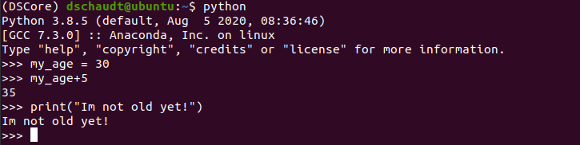
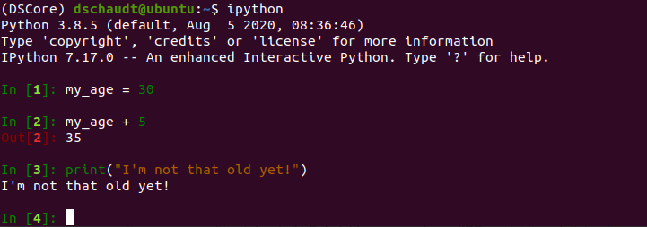
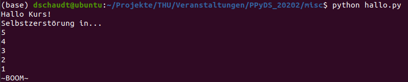
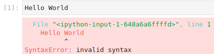
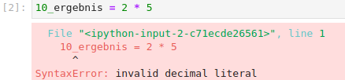
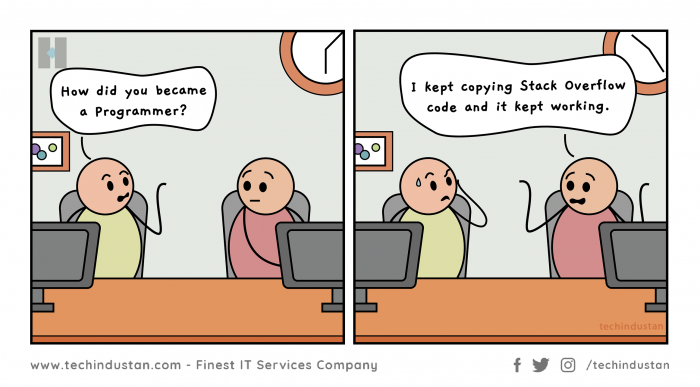

LE1 - Grundlagen von Python¶
Herzlich Willkommen zur Lerneinheit 1 - Grundlagen von Python des Kurses Einführung in die Programmierung mit Python für Data Science.
Das Material dieses Skripts orientiert sich u.a. an diesem Guide. Viele weitere exzellente Guides und Hilfestellungen finden sich beispielsweise auf der offiziellen Wiki-Seite.
Inhaltsübersicht¶
Grundlegendes zu Python¶

Python ist eine Computer-Programmiersprache, ein Vokabular und ein Satz grammatikalischer Regeln, mit denen ein Computer angewiesen wird, Aufgaben auszuführen. Sie ist nicht etwa nach der Schlange, sondern nach der BBC-Fernsehsendung “Monty Python’s Flying Circus” benannt.
Python kann verwendet werden, um Aufgaben zu automatisieren, Berechnungen durchzuführen, Benutzeroberflächen zu erstellen, Website-Backends zu erstellen, auf Datenbanken zuzugreifen, Informationen aus dem Internet herunterzuladen und vieles mehr. Es ist eine vielseitige Sprache, die leicht zu erlernen und zu schreiben ist. Sie eignet sich perfekt für Programmieranfänger, ist aber ebenso nützlich und leistungsstark für erfahrene Profis.
Python verfolgt eine “Batteries Included”-Philosophie - das bedeutet, das Python eine umfassende Basisbibliothek bereitstellt, welche von unzähligen externen Paketen ergänzt wird. Dadurch können unterstützende Basisbibliotheken und externe Pakete für so ziemlich alles gefunden werden, was man mit Python erreichen will.
Im Bereich der Data Science ist Python vermutlich das meist genutzte Werkzeug:

Besondere Merkmale¶
Nachfolgend werden einige der charakteristischen Merkmale von Python kurz erläutert:
Leicht zu lesen und zu schreiben¶
Eines der bemerkenswertesten Merkmale von Python ist die Art und Weise, wie es die Verwendung von Einrückungen für die Lesbarkeit durchsetzt. Ohne die richtige Einrückung wird der Code nicht einmal korrekt ausgeführt. In Python müssen alle Codeblöcke auf der gleichen Ebene eingerückt werden. Hier ist ein Beispiel dafür. Wenn Sie den Code noch nicht verstehen, machen Sie sich keine Sorgen:
def größer_als_drei(x):
# Inhalte der Funktion sind eingerückt
if x > 3:
# Dieser Codeblock ist noch weiter eingerückt
print("X ist größer als drei")
else:
# Und noch einer!
print("x ist drei oder kleiner")
Da Einrückung erforderlich ist, benötigt Python keine Auszeichnungen ({ und }) um Codeblöcke wie bei Java, C und C# zu gruppieren. Obwohl es sich um eine subjektive Angelegenheit handelt, ist man sich im Allgemeinen einig, dass Python dadurch leichter zu verstehen ist.
General purpose¶
Python kann in vielen Situationen eingesetzt werden. Seine reichhaltige Basisbibliothek macht es ausgezeichnet für alle Arten von kleinen Hilfsskripten. Aber es skaliert genauso gut für große Systeme. YouTube wurde ursprünglich in Python geschrieben!
Ein weiteres schnell wachsendes Fachgebiet ist die Data Science. Viele Data Scientist (s.o.) verwenden Python für ihre tägliche Arbeit. Und dies sind nur einige wenige Beispiele. Wenn man genau hinsieht, ist Python recht allgegenwärtig.
Interpreted und nicht compiled¶
Python-Code wird vom Python-Interpreter “on-the-fly” interpretiert, wenn ein Programm ausführt wird. Dies bedeutet, dass der Python-Interpreter die Datei öffnet und beginnt, sie Zeile für Zeile zu lesen, wobei er für jede Anweisung die entsprechenden Aktionen ausführt. Wenn der Python-Interpreter beispielsweise auf print("Hallo") im Code stößt, nimmt er die bereitgestellte Zeichenkette und leitet sie an eine interne Funktion weiter, die den Text auf dem Bildschirm ausgibt.
Dies ist ein völlig anderer Ansatz als kompilierte Sprachen wie C. C-Code wird in Low-Level-Maschinencode kompiliert, der direkt vom Prozessor des Computers ausgeführt werden kann. Dies wird auch als ahead-of-time compilation (AOT) bezeichnet. Da es keinen Interpreter gibt, der als Vermittler fungiert, ist kompilierter Code viel schneller.
Als interpretierte Sprache hat Python einige Vorteile:
Der Code kann in einem Texteditor geschrieben und direkt ausgeführt werden. Es sind keine zusätzlichen Schritte wie Kompilierung und Verlinkung notwendig.
Da es sich um reinen Text handelt, kann ein Programm einfach geöffnet und sein Inhalt inspiziert werden. Im Gegensatz dazu ist kompilierter Code nicht menschenlesbar.
Sie ist plattformunabhängig. Solange die Plattform über einen Python-Interpreter verfügt, wird der Code funktionieren. Kompilierter Code ist an eine bestimmte Plattform, wie Windows und Linux, und an eine bestimmte Prozessorarchitektur, wie Intel oder ARM, gebunden.
Einige dieser Vorteile können auch von Nachteil sein. Wie bereits erwähnt, sind interpretierte Sprachen keine Hochleistungssprachen. Auch die Tatsache, dass der Quellcode leicht zu lesen und zu modifizieren ist, ist kein Vorteil für Anbieter, die ihr Urheberrecht schützen wollen.
Kurz gesagt, jede Sprache hat ihre Vor- und Nachteile und spezifische Nischen - Python hat sich in vielen Situationen als sehr brauchbar erwiesen.
Dynamische Typisierung¶
Ein weiterer Vorteil einer interpretierten Sprache ist, dass sie die Tür zur dynamischen Typisierung öffnet. Was bedeutet das also? Am einfachsten ist das mithilfe von Code zu verstehen.
Nachfolgend einige Variablendeklarationen in Java:
String myName = "Paul";
int myAge = 43;
float mySalary = 1200.50;
In einer stark typisierten Sprache muss der genaue Typ jeder Variablen angegeben werden, wie String, int und float. Es wird noch komplizierter, wenn Objekte beteiligt sind.
In Python können wir genau dasselbe ohne Typen tun:
my_name = "Paul"
my_age = 43
my_salary = 1200.50
Die Python-Variante ist viel sauberer und angenehmer für die Augen! Wenn dieser Code ausgeführt wird, findet Python dynamisch den Typ unserer Variablen heraus.
Die dynamische Typisierung hat viele Vorteile. Im Allgemeinen erleichtert sie den schnellen Einstieg. Es kann aber auch argumentiert werden, dass sie fehleranfälliger ist. Eine stark typisierte Sprache wie Java lässt sich nicht kompilieren, wenn ein Tippfehler gemacht wird. Python wird wahrscheinlich weiterlaufen, aber die Ausgabe wird nicht wie erwartet sein. Daher gilt es, diese Fehler durch Tests früh ausfindig zu machen und zu beheben.
Installation von Python¶
Version¶
Python tritt häufig in zwei verschiedenen Versionen auf: Python 2.x und Python 3.x. Da der Support für ältere Version 2 mittlerweile eingestellt wurde, verwenden wir für diesen Kurs die aktuelle Version 3 von Python. Dies ist aufgrund der Aktualität und des größeren Funktionsumfangs auch für alle zukünftigen Projekte zu empfehlen! Achtung: Python 3 ist nicht abwärtskompatibel.
Installation¶
Je nach Betriebssystem lässt sich Python auf unterschiedliche Arten installieren, wobei es diverse Vor- und Nachteile gibt. Für diesen Kurs wird die Installation von Python über die Python Distribution Anaconda empfohlen. Anaconda ist eine kostenlose open-source Distribution, welche den Paket- und Umgebungsmanager conda beinhaltet. Dies vereinfacht die Installation von Python und weiteren Paketen/Bibliotheken erheblich. Da dieser Kurs allerdings große Teile der Anaconda Distribution nicht benötigt, verwenden wir den Minimal-Installer miniconda. Die offiziellen Installationshinweise für Windows, MacOSX und Linux gibt es hier. Die Installation unter Linux funktioniert wie folgt:
Download des Miniconda-Installers
Ausführen des Installationsskriptes im Terminal mit:
bash Miniconda3-latest-Linux-x86_64.sh
Den Anweisungen des Skriptes folgen. Das Ausführen der
conda initwird empfohlen.Öffnen und Schließen des Terminalfensters um die Änderungen wirksam zu machen.
Test der Installation, zB durch
conda list.Update der durch conda installierten Pakete mit
conda update conda.
Hinweis: Python kann auch Online im Browser ausgeführt werden. Dies kann eine gute Alternative sein, um schnell und systemunabhängig etwas zu testen. Für die Durchführung dieses Kurses sollte allerdings eine lokale Installation erfolgen.
Hands-on Übung¶
Führen Sie nun auf Ihrem System eine Python-Installation mithilfe der Miniconda Distribution durch!
Ausführung von Python-Code¶
Dieser Abschnitt erläutert verschiedene Methoden um Python-Code auszuführen.
Interpreter/REPL¶
Die einfachste Variante um Python-Code auszuführen, führt direkt über den installierten Python-Interpreter - auch REPL (Read-eval-print-loop) genannt in Form einer interaktiven Shell. Der Interpreter kann nach erfolgreicher Installation direkt über das Terminal durch Eingabe von python gestartet werden. Jeglicher Code kann anschließend durch eine schlichte Eingabe ausgeführt werden. Dieser Prozess ist interaktiv, da der Code direkt evaluiert und ausgeführt wird.
REPL eignet sich für kleinere Kalkulationen und das Ausprobieren von Codeschnipseln, hat in der Praxis aber kaum Relevanz, da die Programmierung zu unübersichtlich ist. Eine bessere Alternative ist IPython.

IPython¶
IPython kann als direktes Update zur interaktiven Shell gesehen werden. Nach erfolgreicher Installation mittels conda install ipython kann IPython durch Eingabe von ipython aus der Konsole heraus gestartet werden. Die Vorteile von IPython sind:
Syntax Highlighting
Tab-completion
Historie über Pfeiltasten abrufbar
Zusätzliche nützliche Features über “Magic-commands” (wie
?oder%)

.py-Skripte¶
Python-Code kann auch klassisch in eine Textdatei mit der Dateiendung .py geschrieben werden. Das Skript kann dann aus dem Terminal heraus aufgerufen werden, indem das Keyword python vorangestellt wird, z.B: python myscript.py. Durch das Anlegen und Speichern von Skripten kann das eigene Programm besser organisiert und abgespeichert werden, als dies durch simple Eingabe in der Konsole möglich ist.

IDEs¶
Eine integrierte Entwicklungsumgebung (IDE, engl. integrated development environment) ist das Rückgrat modernen Softwareentwicklung. IDEs stellen viele Werkzeuge und (grafische) Hilfsmittel zur Verfügung um die Programmierung zu erleichtern. Wir werden im Rahmen dieses Kurses noch zwei IDEs kennenlernen: das eher klassische Spyder und das webbasierte Jupyter.
Erste Zeilen Code¶
Es wird Zeit für die ersten eigenen Zeilen Code! Diese können bequem in der interaktiven Python Shell ausgeführt werden. Die Eingabe erfolgt nach den drei Pfeilen (>>>).
“Hello World”¶
Da die interaktive Python Shell jeglichen Code direkt evaluiert und ausführt, können wir Strings (also eine Verkettung von Zeichen) einfach eingeben und diese erscheinen dann in der Ausgabe:
"Hello World"
'Hello World'
Es ist zu beachten, dass wir Python den String als solchen durch die Anführungszeichen kenntlich machen müssen - ansonsten interpretiert Python unsere Eingabe als Variable und es kommt zu einem Fehler:

Hier bekommen wir einen Syntaxfehler, da Variablen nicht aus zwei Wörtern bestehen dürfen. In Python kann ein String sowohl mit einfachen, als auch normalen Anführungszeichen gekennzeichnet werden.
Normalerweise wollen wir eine Ausgabe allerdings kontrolliert steuern und verwenden dafür die print()-Funktion:
print("Hello World")
Hello World
Hands-on Übung¶
Lassen Sie Ihren Vor- und Nachnamen jeweils auf verschiedene Arten durch Python ausgeben:
Interpreter/REPL
IPython-Konsole
Als
.py-Skript
Python als Taschenrechner¶
Rechenoperationen können direkt von Python als solche interpretiert werden. Dadurch erhält man einen einfachen Taschenrechner:
1 + 2
3
Python kennt alle Standardoperatoren und berücksichtigt Klammern bei der Reihenfolge der Ausführung:
2 + 3 * 3
11
(2 + 3) * 3
15
2 / 2 * 8
8.0
Hands-on Übung¶
Berechnen Sie mithilfe von Python:
In Baden-Württemberg leben rund 11,1 Millionen Menschen. Der Anteil der weiblichen Bevölkerung beträgt 50,2 Prozent. Um wieviel übersteigt die absolute Anzahl der Frauen die der Männer?
Variablen und Ausdrücke¶
Da wir nun wissen, wie man Python als Taschenrechner verwenden kann, wäre es doch sinnvoll, wenn wir das Ergebnis unserer Rechnung speichern könnten. Dazu werden in Python Variablen verwendet. Eine Variable wird verwendet um Informationen zu speichern, auf welche später wieder zugegriffen werden kann. Legen wir daher eine Variable ergebnis an:
ergebnis = 2 * 5
ergebnis
10
Hier passiert folgendes:
Python erkennt die erste Zeile als eine Zuweisung: Wir weisen das Ergebnis von 2*5 der Variable
ergebniszuIn der zweiten Zeile schreiben wir
ergebnisPython erkennt
ergebnisnicht als Befehl und sucht daher nach einer Variablen mit diesem Namen. Es gibt sie und wir haben ihr 10 zugewiesen. Daher wird diese Zeile zu 10 evaluiert und ausgegeben.
Der Name unserer Variablen ist dabei arbiträr gewählt. Variablennamen in Python können aus Groß- und Kleinbuchstaben, Zahlen und dem Unterstrich (_) bestehen. Eine Variable muss allerdings immer mit einem Buchstaben beginnen:

Weiterhin wird die Groß- und Kleinschreibung berücksichtigt:
alter = 1
Alter = 2
aLter = 3
print(alter, Alter, aLter)
1 2 3
Als Daumenregel sollten immer Namen gewählt werden, die die jeweilige Variable am besten beschreiben. Dabei bietet sich an, sich an die Richtlinien des offiziellen Style Guide for Python Code (PEP 8) zu halten. Python enthält ebenfalls reservierte Keywords, welche nicht als Variablennamen verwendet werden können(siehe diese Liste).
Variablen sind ein entscheidender Teil jeder Programmiersprache, da Sie auch in anderen Ausdrücken verwendet werden können:
ergebnis * 3
30
ergebnis - ergebnis
0
Ein Ausdruck ist dabei alles, was Python als einen Wert evaluieren kann.
Übungen LE1¶
Genereller Hinweis zu den Übungen und zur Programmierung allgemein¶
Manche Werkzeuge, welche Sie für die Bearbeitung der Übungen benötigen, finden Sie explizit nicht im Theorieteil dieses Kurses. Das Suchen und Finden von Lösungen für Programmieraufgaben jeglicher Art haben sich als essentielle Fähigkeiten beim Schreiben von Software hervorgetan. Durch große Communities wie Stack Overflow ist die Wahrscheinlichkeit groß, dass das vorliegende Problem schon einmal aufgetaucht ist und gelöst wurde.

Modernes Programmieren besteht daher zu einem nicht unerheblichen Teil aus der Suche nach Lösungen zu einem zumindest verwandten Problem. In diesem Sinne: Seien Sie nicht zögerlich ihre Frage zu googlen!
Hier noch einige allgemein nützliche Ressourcen rund um Python:
1.1 Korrekte Python-Installation¶
Führen Sie eine Python-Installation mittels
minicondadurch.Prüfen Sie anschließend die Korrektheit und Version mittels
whichundpython --version, sowieconda list.
1.2 Interaktive Python Shell¶
Öffnen Sie eine interaktive Python Shell und geben Sie
5+5ein. Was passiert beim ausführen? Erläutern Sie die Schritte des REPL-Prozesses anhand dieses einfachen Beispiels.Verwenden Sie Python als Taschenrechner. Welche Rechenoperationen werden durch die Operatoren
%,//und**ausgeführt?
1.3 Python Skript¶
Lösen Sie folgende Rechenaufgabe in Python:
Der Preis eines Buches beträgt 24,95 €, aber Buchläden erhalten beim Bezug einen Rabatt von 40%. Die Versandkosten betragen 3 € für das erste Exemplar und 75 Cent für jedes weitere Exemplar. Wie hoch sind die gesamten Großhandelskosten für 60 Exemplare? Steuereffekte werden nicht berücksichtigt.
Verwenden Sie für die Lösung entsprechende Variablen und Ausdrücke. Schreiben Sie ihre Lösung als Skript und speichern dieses als
.py-Datei ab. Nach Aufruf des Skripts sollte eine formatierte Ausgabe mit dem Ergebnis erscheinen. Finden Sie dabei einen Weg, wie Sie sowohl Text, als auch Variablen in einemprint()-Befehl ausgeben können.